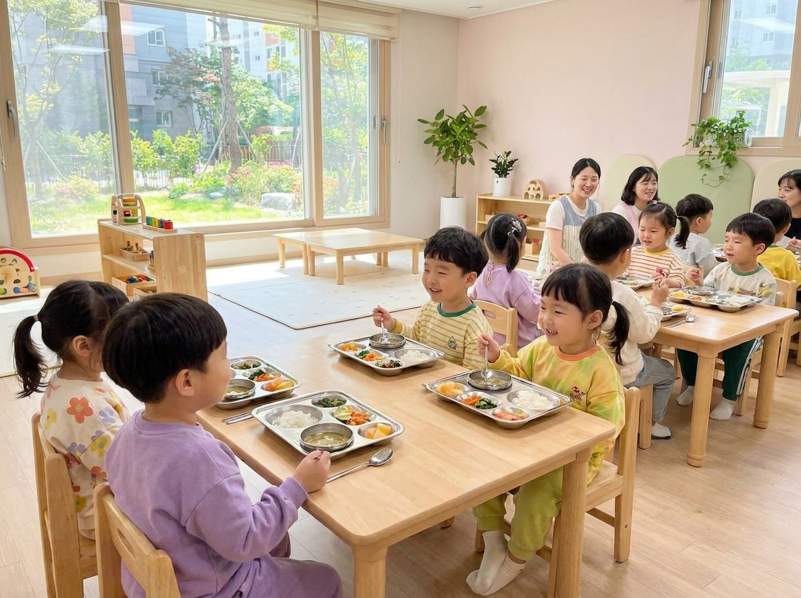

식기 일괄 대여·관리
식판·컵·수저·물통 등 영유아 전용 식기를 기관 규모에 맞춰 제공합니다. 구매·보관·파손 교체 걱정 없이 운영하세요.
- 영유아 전용 안전 소재 식기
- 식판·컵·수저·물통 풀 패키지
- 파손·교체 부담 없는 정기 관리
식기 구매부터 세척, 위생관리, 교체까지 — 기관이 직접 짊어지던 모든 부담을 RE:able이 대신합니다.
식판·컵·수저·물통 등 영유아 전용 식기를 기관 규모에 맞춰 제공합니다. 구매·보관·파손 교체 걱정 없이 운영하세요.
매일 수거한 식기를 8단계 자동 세척 공정으로 처리합니다. 120℃ 고온 살균으로 세균 걱정을 수치로 없앱니다.
정해진 루트로 매일 수거하고, 다음 날 깨끗하게 돌려드립니다. 준비 없이도 아침마다 위생적인 식기가 도착합니다.
 영유아 전용 안전 식기 운영
영유아 전용 안전 식기 운영
도입 첫 주부터 달라집니다. 설거지가 사라지면, 선생님의 시간은 아이들에게 돌아갑니다.
급식 후 설거지에 쓰던 시간을 교육 활동으로 전환합니다. 담당 인력 부담이 즉시 줄어듭니다.
ATP 검사 합격 수치를 제공해 "안전하게 먹였다"는 근거를 학부모와 나눌 수 있습니다.
초기 구매비, 파손 교체비, 보관 공간 걱정이 사라집니다. 월 정액으로 예산을 예측 가능하게 유지하세요.
다회용 식기 순환으로 일회용 폐기물을 줄이고, 친환경 기관 이미지를 자연스럽게 쌓습니다.
계약 이후에는 기관이 직접 할 일이 없습니다. RE:able이 정해진 루트로 매일 돌아갑니다.
급식 후 사용한 식기를 전담 기사가 기관별 정기 루트로 회수합니다. 기관은 식기를 모아두기만 하면 됩니다.
운영 인프라로 이송된 식기는 애벌 세척부터 본세척, 120℃ 고온 살균까지 8단계 자동 공정을 거칩니다.
세척 완료 후 잔류 오염을 ATP 측정기로 수치화해 전수 검증합니다. 합격 기준을 통과한 식기만 포장됩니다.
검증 완료 식기를 위생 포장 후 다음 날 아침 기관으로 배송합니다. 매일 깨끗한 식기가 제시간에 도착합니다.

키즈노트 · 전국 약 3,000개 기관 연동전국 어린이집·유치원에서 가장 많이 쓰는 키즈노트를 통해 서비스 신청과 일상적인 소통이 이루어집니다. 새로운 시스템을 배울 필요 없이 바로 시작할 수 있습니다.
별도 앱 설치 없이 키즈노트 내에서 도입 신청과 소통이 가능합니다.
문의 후 현장 상담, 맞춤 견적, 계약까지 신속하게 진행합니다.
원아 수와 식기 구성에 따라 요금이 달라집니다. 부담 없이 문의 주시면 기관 상황에 맞는 최적안을 안내해 드립니다.
원아 30인 이하 소규모 어린이집·유치원에 적합한 구성입니다.
월 80만원대 ~
정확한 금액은 규모별 맞춤 견적으로 안내
원아 30~80인 어린이집·유치원에 가장 많이 선택되는 구성입니다.
월 100만원대 ~
정확한 금액은 규모별 맞춤 견적으로 안내
원아 80인 이상 또는 유보통합 기관, 다지점 운영을 위한 맞춤 구성입니다.
규모별 맞춤 견적
문의 후 현장 상담으로 정확히 안내
※ 유보통합 정책으로 기관당 규모가 확대되는 추세입니다. 도입 규모 변경 시에도 유연하게 대응해 드립니다.
전국 280개 기관이 매일 선택하는 이유, 직접 들어보세요.
"설거지에 쓰던 시간이 사라졌어요. 선생님들이 아이들에게 훨씬 더 집중할 수 있게 됐습니다. 위생 걱정도 줄어서 원 분위기 자체가 달라졌어요."
"위생 검사 결과를 수치로 받아보니 학부모 신뢰가 완전히 달라졌어요. '우리 아이 식기 괜찮냐'는 질문이 눈에 띄게 줄었습니다. 매번 100% 합격이라는 게 안심됩니다."
기관 규모와 운영 환경에 맞춰 맞춤 견적을 안내해 드립니다. 부담 없이 문의 남겨주시면 영업일 기준 1일 이내에 연락드립니다.